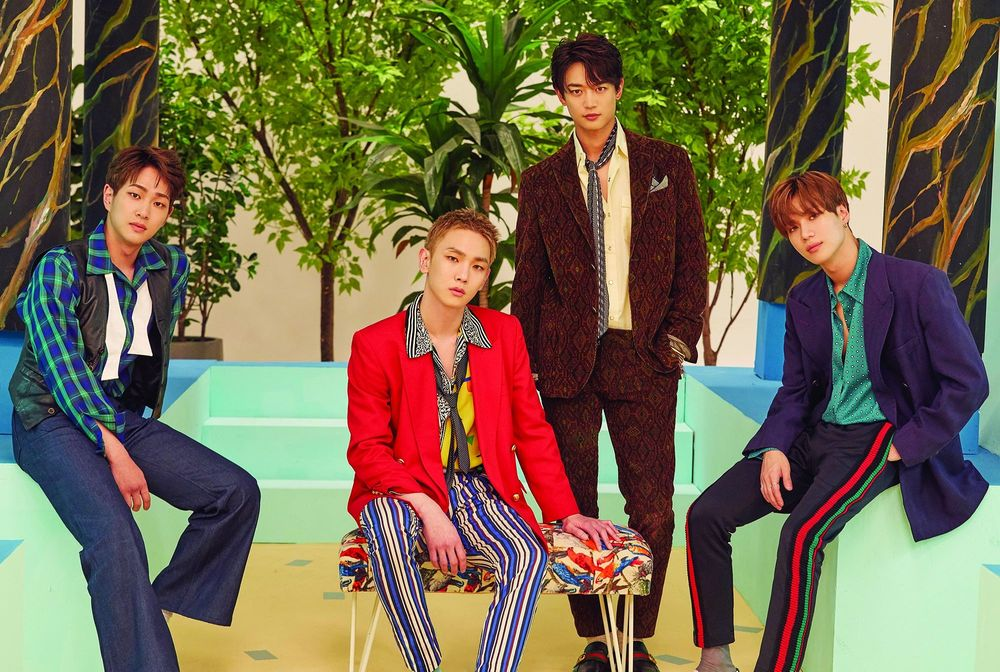

SM엔터테인먼트의 5인조 아이돌 보이그룹. SHINee라 쓰고 샤이니라 읽는다. 어리고 귀여운 이미지와 그룹 이름 탓에 '빛돌이'라는 별명으로 불리기도 한다. 데뷔 이전에는 SM 내에서 샤이니라는 이름 대신 애기팀으로 불렸다고 한다.
2008년 데뷔 당시부터 큰 인기를 끌었으며 2009년부터 일본 진출을 계획, 2010년 말에는 일본에서 열린 샤이니의 첫 단독콘서트와 EMI Music Japan과의 계약을 잇따라 성공시키며 2011년 일본 시장에 성공적으로 진출했다.